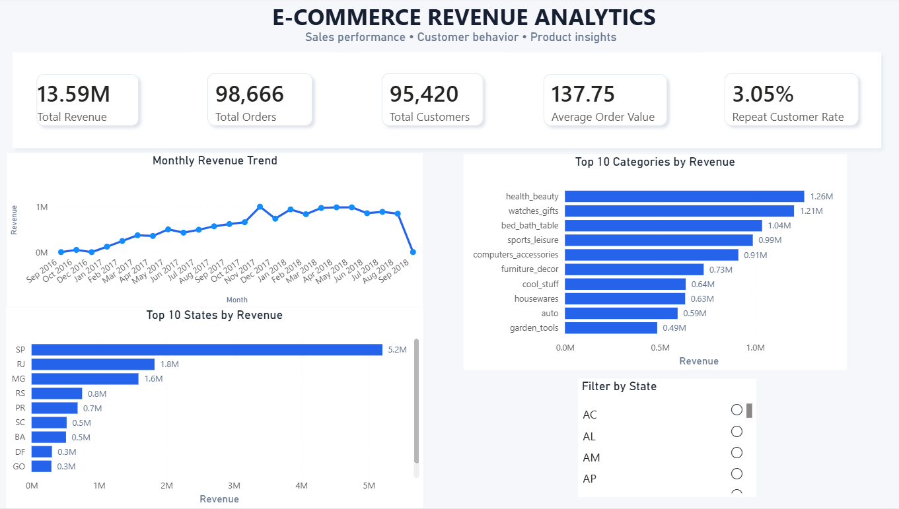

Computer Science undergraduate based in Kedah, Malaysia, focused on data cleaning, exploratory analysis, and building dashboards that hold up under real business questions — not just pretty charts.

I'm a Computer Science undergraduate at Albukhary International University, currently on the Dean's List, with a practical focus on data analytics: cleaning and querying large datasets, building KPI logic, and validating everything twice before it reaches a dashboard.
Outside coursework, I freelance as a web developer and graphic designer for small local businesses — which means I'm as comfortable talking to a client about what they actually need as I am writing a CTE or a DAX measure. My interest is in the layer between raw data and business decisions: making sure the number on the dashboard is the right number.
Python, Pandas, NumPy, Matplotlib, Seaborn, exploratory data analysis, C++, Java, JavaScript, HTML, CSS, PHP
SQL, SQLite, MySQL, PostgreSQL, joins, CTEs, subqueries, aggregations, window functions
Power BI, DAX, Power Query, dashboard development, KPI analysis, data visualization, Tableau
Pivot tables, VLOOKUP, XLOOKUP, charts, data cleaning
Data transformation, validation, cleaning, modeling, statistical analysis, cohort and trend analysis
Git, GitHub, Google Colab, Jupyter Notebook, MySQL Workbench
Open to data analyst roles, internships, and freelance data or web projects.